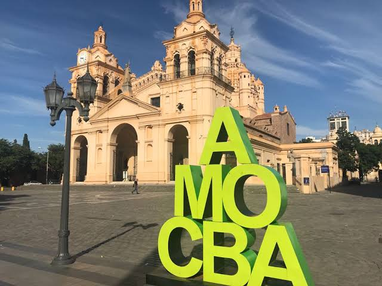

Desde los hogares
- Separar los residuos reciclables.
- Reducir productos descartables.
- Reutilizar materiales.
- No arrojar basura en terrenos baldíos.
- Respetar los horarios de recolección.
- Realizar compostaje cuando sea posible.
Una mirada sobre la contaminación por residuos, los basurales a cielo abierto y la participación de la comunidad.
La acumulación y disposición inadecuada de residuos constituye una problemática ambiental importante en Deán Funes.
El problema no se relaciona solamente con la cantidad de basura generada, sino también con la manera en que se recolecta, separa, trata y dispone finalmente.
Esta situación permite observar cómo una problemática ambiental también puede convertirse en una problemática social, ya que requiere la participación del Estado, los vecinos, comercios, instituciones y empresas.

Imagen ilustrativa. Fuente: agregar referencia de la fotografía utilizada.
Los basurales a cielo abierto son espacios donde los residuos se depositan directamente sobre el terreno sin contar con las condiciones de infraestructura y control necesarias.
En estos lugares pueden acumularse bolsas, plásticos, cartón, papel, metales, residuos domiciliarios, restos de poda, escombros y residuos voluminosos.
Los residuos pueden liberar sustancias durante su descomposición y afectar las propiedades del suelo.
Los lixiviados pueden infiltrarse en el suelo y, dependiendo de las condiciones, alcanzar aguas subterráneas.
La quema y descomposición de residuos puede generar humo y diferentes gases.
La acumulación de residuos puede atraer roedores, insectos y otros animales.
En mayo de 2025 se realizó una jornada de limpieza de un basural a cielo abierto ubicado en barrio Villa Matilde, en la ciudad de Deán Funes.
La intervención permitió retirar residuos acumulados y recuperar el espacio. Sin embargo, la limpieza por sí sola no resuelve definitivamente el problema: también es necesario evitar que el lugar vuelva a utilizarse como punto de descarte.
Que la gestión de residuos necesita continuidad y participación comunitaria. La responsabilidad no corresponde únicamente al municipio: también involucra a los vecinos y a las instituciones.
Fuente: Córdoba Interior Informa, 13 de mayo de 2025.
Los residuos pueden liberar sustancias contaminantes durante su descomposición.
Los líquidos generados por los residuos pueden infiltrarse en el terreno.
La quema de residuos libera humo y contaminantes a la atmósfera.
La acumulación de basura modifica el paisaje y deteriora espacios urbanos y naturales.
Los residuos orgánicos pueden atraer moscas, roedores y otros animales.
La acumulación de residuos puede generar riesgos de accidentes y exposición a materiales contaminantes.
El reciclaje permite recuperar materiales que pueden volver a utilizarse como materia prima, reduciendo la cantidad de residuos que terminan en los sitios de disposición final.
La economía circular propone reducir el modelo tradicional de producir, consumir y desechar. En su lugar, busca reducir el consumo, reutilizar productos y recuperar materiales.
Comprar solamente lo necesario y disminuir los productos descartables.
Dar nuevos usos a objetos y materiales antes de convertirlos en residuos.
Recuperar materiales para que puedan transformarse nuevamente.
La educación ambiental permite comprender las consecuencias de nuestras acciones y adoptar hábitos más responsables.
Separar residuos, reciclar, reutilizar, compostar y evitar arrojar basura en lugares no autorizados son pequeñas acciones que, realizadas de forma constante y colectiva, pueden generar cambios.
La Subsecretaría de Ambiente de Deán Funes informa que entre sus actividades se encuentran la educación ambiental, la reforestación, la protección de la biodiversidad y programas relacionados con la separación y recuperación de residuos.
También se menciona la recolección de plásticos mediante contenedores, cuyos materiales son procesados para la construcción de adoquines ecológicos.
La contaminación producida por los residuos y la formación de basurales y microbasurales representan una problemática que afecta el ambiente y la calidad de vida de la comunidad.
El caso de Villa Matilde permite observar que limpiar un espacio es importante, pero también es necesario prevenir que vuelva a convertirse en un lugar de descarte.
La separación de residuos, la reducción del consumo, la reutilización, el reciclaje y la educación ambiental forman parte de una estrategia más amplia para construir una ciudad más limpia y sostenible.